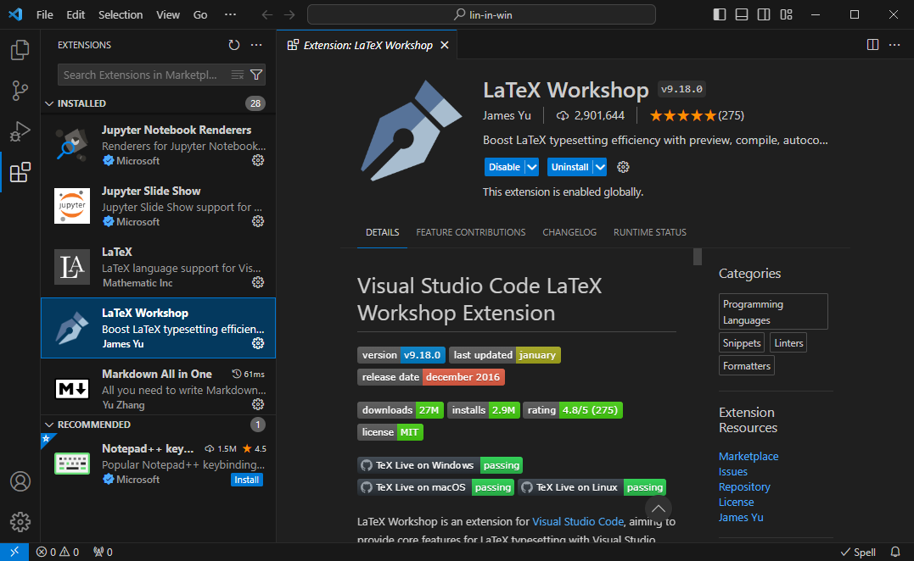
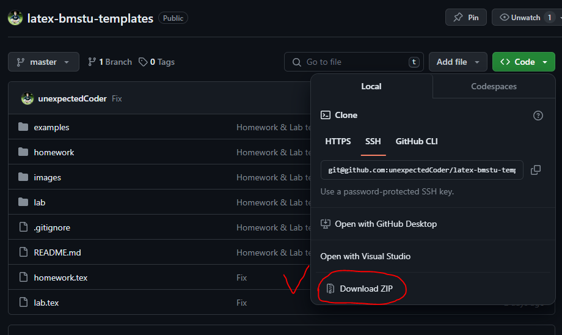

Оформляем тексты в LaTeX#
\(\mathrm{\LaTeX}\) (произносится как “латех” с ударением на “е”) -
это мощная профессиональная система вёрстки текстовых документов:
от буклетов до многотомных литературных и академических трудов.
Пы пишите (можно даже сказать, программируете) текст в файлах
с форматом .tex.
Затем передаёте эти файлы компилятору латеха
и на выходе получаете либо DVI, либо PDF файл
в зависимости от компилятора и его настроек
(как вы увидите, в этом нет никакой сложности).
Работу с латехом можно сделать одинаковой в Linux и Windows. И мы это сделаем. Тогда пользователи Windows будут выполнять те же действия, что и линуксоиды, и получать тот же (прекрасный) результат. Для этого необходимо немного прокачать Window, а именно, установить эмулятор терминала Linux Cygwin. Как это сделать, показано на странице Установка Cygwin по установке самого Cygwin, а также библиотек и компиляторов латеха.
Отныне будем считать, что вы работаете либо в Linux, либо в Windows с установленным и настроенным Cygwin.
Настраиваем VS Code#
Для удобства работы с латехом рекомендуется установить следующие расширения для VS Code:
LaTeX Workshop - набор утилит для удобства создания файлов
.tex:
Russian - Code Spell Checker (проверка русской орфографии):

Наш первый текст#
Куда же без “Hello, world!”? Создадим документ с такой фразой.
Создайте tex-файл, например, main.tex
и откройте его в VS Code.
Файлы латеха состоят из двух основных частей:
преамбулы и основной части.
Основной текст - это текст, находящийся внутри окружения document,
т.е. между командами
\begin{document}
% Здесь основной текст
\end{document}
Преамбула - это всё остальное, что находится перед командой
\begin{document}, т.е. перед основным текстом.
Наш хэллоу ворлд будет выглядеть как-то так:
\documentclass{report} % общий стиль документа - отчёт
\usepackage[utf8]{inputenc} % кодировка символов
% Конец преамбулы.
% Начало основного текста
\begin{document}
Hello, world!
\end{document}
Настало время компилировать.
Открываем терминал (для пользователей Windows это означает
“открыть Cygwin”) и переходим в директорию с нашим файлом.
Допустим, что файл в Windows находится по пути
E:\tex-examples\hello.tex.
Для этого даём команды:
$ cd e:
$ cd tex-examples
Note
В Linux пути отличаются. Однако с большой долей вероятностью пользователи Linux с лёгкостью перенесут эти инструкции на свои пути.
Перешли в директорию. Компилируем:
$ pdflatex hello.tex
Готово!
В той же директории вы получите одноимённый файл PDF (hello.pdf).
Откройте его - и вы увидите приветствие миру.
Note
Существует множество компиляторов \(\mathrm{\LaTeX}\):
pdflatex, xelatex, latex и многие другие.
Если бы мы заменили pdflatex, например, на latex,
то на выходе получили бы файл формата DVI.
Вот и всё! Всего-то! Но есть нюанс… Реальность сложнее. Например, мы не можем пока создать документ с русским языком (вернее, с кириллическим шрифтом). Нужно также уметь настраивать геометрию страниц, размер шрифта, стиль математических формул, таблиц, рисунков и так далее и тому подобное. В данном пособии эти вопросы подробно не рассматриваются. Всю необходимую информацию вы найдёте в интернете и в литературе, к примеру, в следующих книгах (расположены в порядке убывания первоочерёдности):
“\(\mathrm{\LaTeX}\) по-русски” Котельникова;
“Набор и вёрстка в системе \(\mathrm{\LaTeX}\)” Львовского;
“Основы \(\mathrm{\LaTeX}\)”. Учебное пособие Кузнецова.
Note
Этой литературы в большинстве случаев оказывается достаточно, чтобы за пару дней освоить \(\mathrm{\LaTeX}\) на уровне оформления диплома. Не нужно читать книги полностью и последовательно. Достаточно прочитать разделы с основами создания документов, а остальные разделы, где подробно рассматривается какой-либо функционал, просматривать по мере необходимости.
В следующем разделе рассмотрим более сложный пример \(\mathrm{\LaTeX}\)-файла, содержащего шаблон оформления домашнего задания.
Обзор шаблона документа \(\mathrm{\LaTeX}\)#
Шаблоны текстовых документов, оформляемых студентами МГТУ им. Н.Э. Баумана, вы найдёте в этом репозитории. Скачайте его себе, например, как zip-архив:

Для примера рассмотрим содержимое файла homework.tex -
шаблона домашнего задания.
Пойдём по небольшим частям.
Для начала рассмотрим преамбулу.
%%% homework.tex %%%
% Класс документа - расширенный отчёт
\documentclass[14pt, a4paper]{extreport}
% Кодировка UTF-8
\usepackage[utf8]{inputenc}
% Подключаем кириллицу
\usepackage[T2A]{fontenc}
% Подключаем стиль для английского и русского текста
\usepackage[english, russian]{babel}
% Делаем заголовок "Содержание" для содержания
% вместо "Оглавления" по умолчанию,
% выравнивая по центру
\addto\captionsrussian{
\renewcommand{\contentsname}
{\begin{center}
\bfseries\large Содержание
\end{center}}
}
Продолжаем настройку. Настроим абзацы, шрифты, геометрию страниц:
% Первый абзац после заголовка - с красной строки
% (у англичан первый абзац не имеет отступа)
\usepackage{indentfirst}
% Пакет для оформления математических формул
\usepackage[intlimits, sumlimits]{amsmath}
% Пакет с греческими буквами прямого начертания
% (как принято в отечественной печати)
\usepackage{upgreek}
% Современный шрифт для математики
\usepackage{newtxmath}
% Пакет для работы с таблицами
\usepackage{tabularx}
Настраиваем геометрию страниц:
% Настраиваем геометрию страниц:
\usepackage{geometry}
\geometry{
includefoot,
footskip=1cm,
left=3cm,
top=1.5cm,
right=1cm,
bottom=1.5cm
}
Далее - мелочи:
% Для настройки межстрочного интервала
\usepackage{setspace}
% Для настройки стилей заголовков
\usepackage{titlesec}
% Для табуляций
\usepackage{tabto}
% Для работы с рисунками
\usepackage{graphicx}
% Директория с картинками
\graphicspath{{./images/}}
% Для работы с многофайловым проектом
\usepackage{subfiles}
% Для подсчёта суммарного числа страниц
\usepackage{totpages}
% Булева логика (программирование)
\usepackage{ifthen}
Далее создаётся шаблон титульной страницы. Опустим его разбор. Вы легко с ним разберётесь, как только познаете основы \(\mathrm{\LaTeX}\).
% Величина отступа (красной строки)
\setlength\parindent{1.25cm}
% Настраиваем стили заголовков
\titleformat*{\section}{\large\bfseries}
\titlespacing*{\section}{1.25cm}{6pt}{6pt}
\titleformat*{\subsection}{\normalsize\bfseries}
\titlespacing*{\subsection}{1.25cm}{6pt}{6pt}
% Делаем чистовик, в не черновик (\fussy)
\sloppy
Переходим к основной части документа:
\begin{document}
% Внесите информацию для формирования титульного листа
\TitlePage
{Дисциплина}
{Тема}
{7} % вариант
{СМ6-113} % группа
{И.Р.~Иванов-Римский} % и.о. фамилия студента
{П.П.~Петров} % и.о. фамилия преподавателя
% Настроили межстрочный интервал
\setstretch{1.5}
% Создаём новую команду:
% содержание будет отображено автоматически,
% если объём работы превысит 10 страниц
\newcommand\ConditionalTOC{
\ifthenelse{\pageref{LastPage} > 10}{
\tableofcontents
\clearpage
}{}
}
% Вызываем функцию условного отображения содержания
\ConditionalTOC
% Отключаем нумерацию разделов
\setcounter{secnumdepth}{0}
% Разделы ДЗ:
% ваша задача - описать решение ДЗ в трёх нижеследующих файлах
% (подробности см. в указанных файлах)
\subfile{homework/1_task}
\subfile{homework/2_method}
\subfile{homework/3_results}
% Метка последней страницы, чтобы достать её номер
\label{LastPage}
\end{document}
Хорошая новость в том,
что вам не нужно ничего менять в данном файле.
Всё, что от вас требуется - передать необходимые аргументы
функции \TitlePage для генерации титульной страницы.
Ваша основная работа (написание отчёта по той или иной работе)
заключается в написании текста в файлах разделов.
Это те файлы, что переданы функции \subfile.
Например, для ДЗ эти файлы лежат в директории homework/,
для лабораторной работы - в директории lab/.
Вы просто пишите то, что считаете нужным написать в файлах разделов,
включая таблицы, рисунки, формулы и прочее.
И затем тем же самым образом компилируете итоговый файл:
$ pdflatex homework.tex
или для отчёта по лабораторной работе:
$ pdflatex lab.tex
При этом в субфайлах нет необходимости снова подключать какие-либо
пакеты - все они уже подключены в основном файле.
Всё же и субфайлы имеют определённую строгую структуру.
Для примера рассмотрим файл homework/1_task.tex:
%%% homework/1_task.tex %%%
% Преамбула субфайла:
% указываем главный файл
\documentclass[../homework.tex]{subfiles}
% указываем директорию картинок
\graphicspath{{\subfix{../images/}}}
% Конец преамбулы
% Начало основной части
\begin{document}
% Заголовок раздела
\section{Задание}
% Здесь описываете вашу задачу ДЗ
% ...
\end{document}
Преамбула всех субфайлов, как правило, одинакова.
См. также#
“\(\mathrm{\LaTeX}\) по-русски” Котельникова.
“Набор и вёрстка в системе \(\mathrm{\LaTeX}\)” Львовского.
“Основы \(\mathrm{\LaTeX}\)”. Учебное пособие Кузнецова.
Cygwin - Unix-подобная среда для Windows.